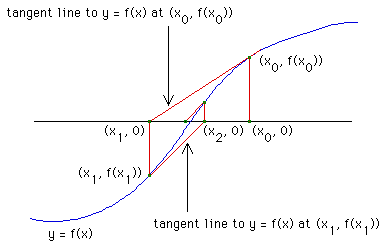

| Newton devised an iterative process, called Newton's Method for finding the roots of functions. |
| A root of a function f(x) is a number x* for which f(x*) = 0. That is, the graph of y = f(x) crosses the x-axis at x*. |
| Here is Newton's method. |
|  |
| Click the picture to animate. |
Being the inventor of calculus, Newton was able to find a compact expression for this construction.
| x1 = x0 - f(x0)/f '(x0) |
| x2 = x1 - f(x1)/f '(x1) |
| ... |
Writing Nf(x) = x - f(x)/f '(x), Newton's method can be encapsulated in a single iterative scheme:
Return to real Newton's method.